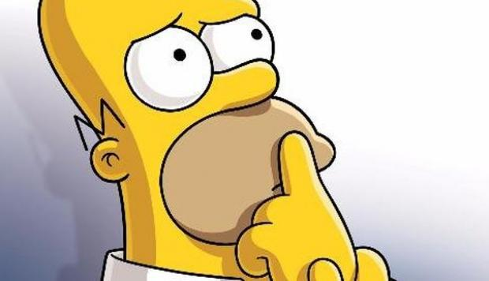

Un chiste, chascarrillo o facecia es una narración oral breve, ficticia y humorística que suscita la risa. A veces también puede ser satírico, irónico, crítico o burlesco. Contiene un juego verbal o conceptual capaz de mover a risa y fundado en el humor
las empandas fuente proteica que te da multiples beneficios como cancer gonorrea chancro y muchas otras cosas mas
Podemos crear un párrafo resaltando parte de sus contenidos.
aqui vemos a homero claramente pensando a que hora sera su hora de salida uhmmmm. contemos 1 2 3 4 5 6 7 8 9 10 parte de sus contenidos.